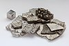

cobalt

Definition: Cobalt is a chemical element with the symbol Co and atomic number 27. As with nickel, cobalt is found in the Earth's crust only in a chemically combined form, save for small deposits found in alloys of natural meteoric iron. The free element, produced by reductive smelting, is a hard, lustrous, silver metal.
Source: Wikipedia
Wikipedia Page
Wikidata Page